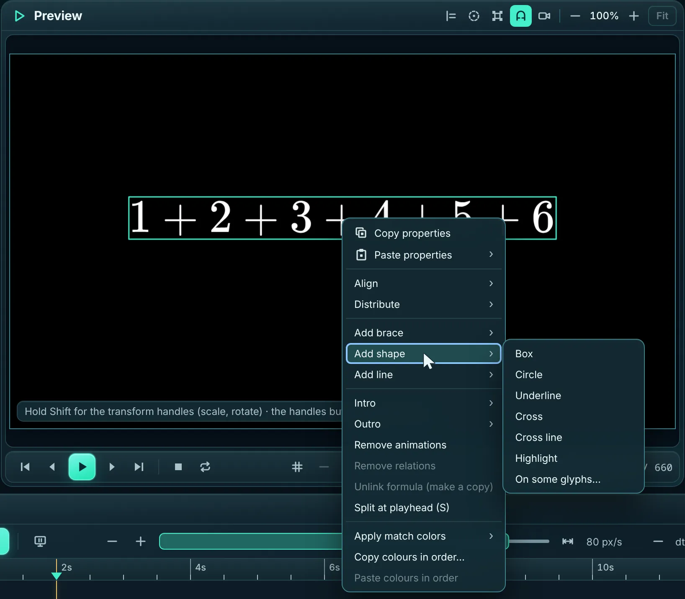
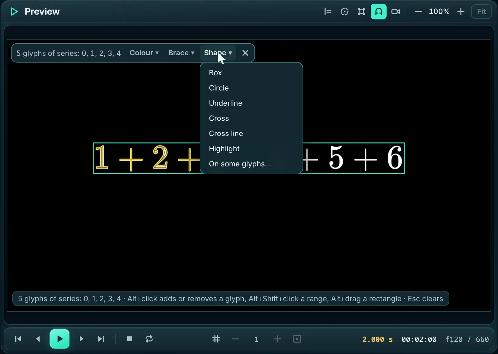
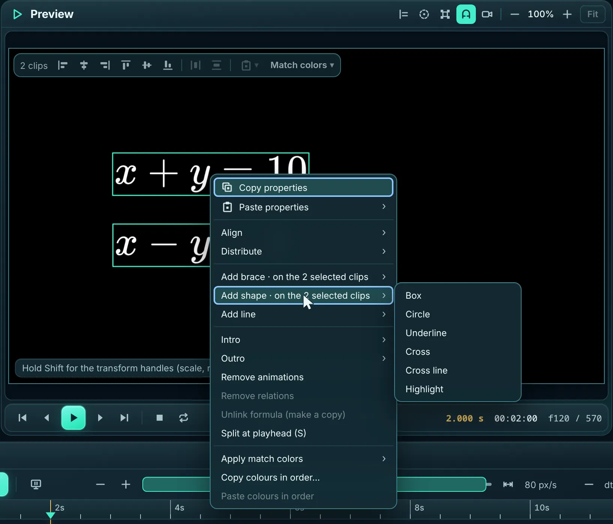
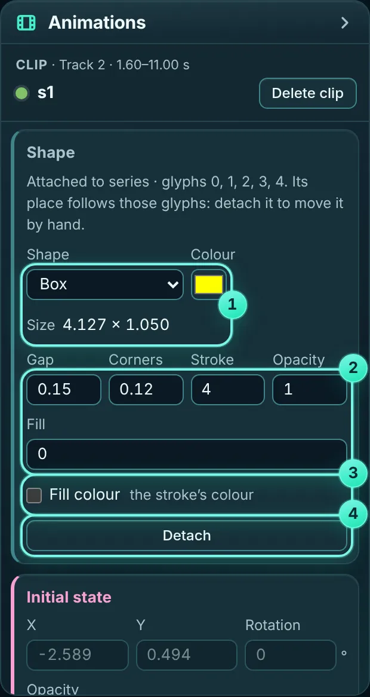
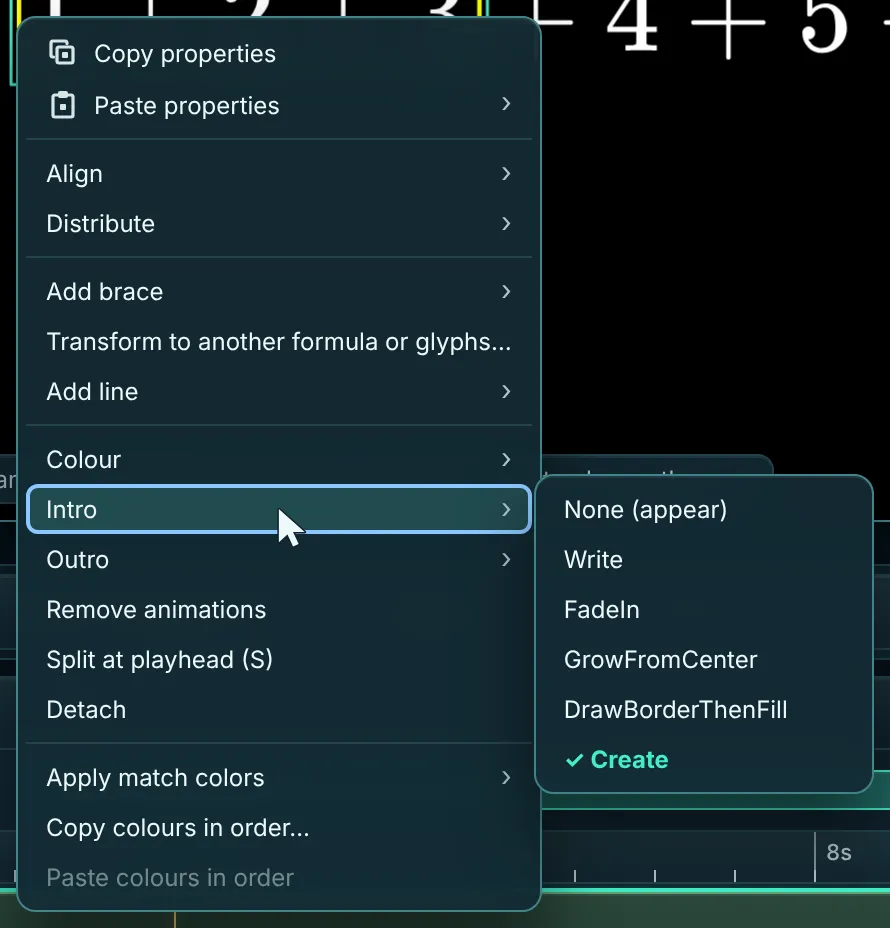
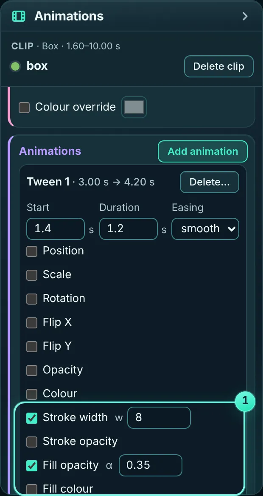
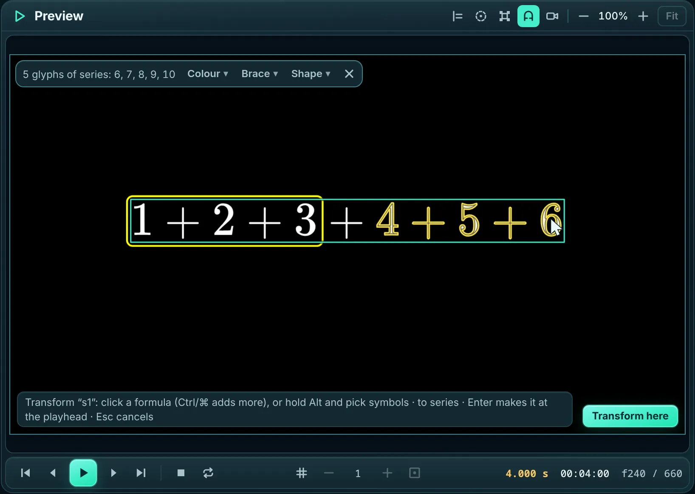
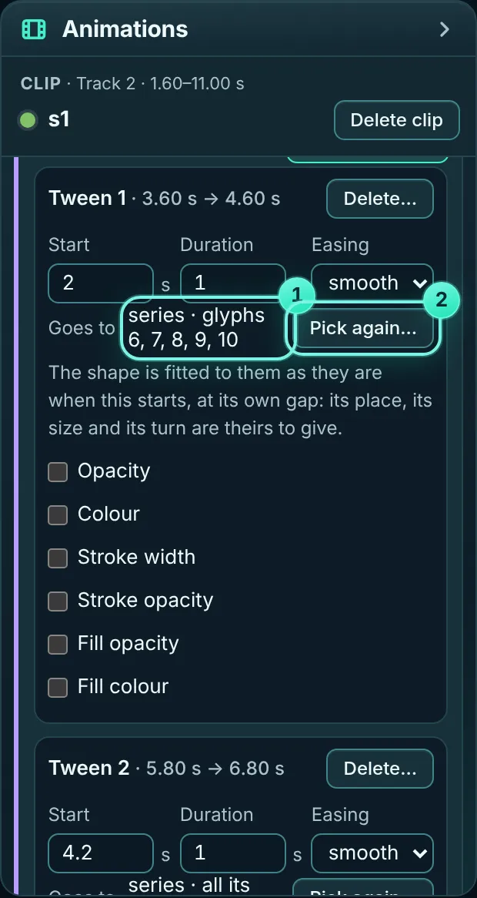

Shapes
A shape draws attention to glyphs: a box round a term, a circle, an underline, a cross over it or a single line through it, a highlight behind it. A shape is fitted to the glyphs it hangs on, comes with no animation until you give it one, and a Transform can repaint it or carry it to other glyphs.
Shapes work like braces: you add them from the menu of a clip, they have a clip of their own, and the exported scene fits them to the glyphs when the clip starts.
Adding a shape
Right-click a formula or a text, in the Preview or on its clip in the timeline, and choose Add shape ▸ one of Box, Circle, Underline, Cross, Cross line and Highlight.

The shape is an object of its own, named s1, s2…, with a clip of its own. The Creator does not list it: it lives with its clip. The clip runs from the playhead to the end of the clip the shape hangs on (from the end of that clip's intro when the playhead is inside the intro or outside the clip). It goes on the nearest free track in front of the glyphs' track, or behind it for a highlight, and a new track opens right beside the target's when that side has no room.
A new shape has no animation: it is there when its clip starts. Like a brace, it is fitted to the glyphs as they are when it appears and stays put afterwards.
The six shapes
| Shape | What it draws | In Manim | Gap | Starts as |
|---|---|---|---|---|
| Box | a rectangle round the glyphs | SurroundingRectangle | 0.1 | yellow, stroke 4 |
| Circle | a circle through the corners of the glyphs' box | a circle, built by a helper of the file | 0.1 | red, stroke 4 |
| Underline | a line under the glyphs, as wide as they are | Underline | 0.1 | white, stroke 4 |
| Cross | two lines over the box of the glyphs | Cross | none | red, stroke 6 |
| Cross line | one line of that cross, over a diagonal | one line of a Cross, built by a helper | none | red, stroke 6 |
| Highlight | a box filled and with no stroke, behind the glyphs | SurroundingRectangle, filled | none | yellow, fill 0.3 |
The gap is Manim's buff, in scene units. The colours and strokes are Manim's own when no palette is active; Palettes and Chroma Lab says how a palette changes what new objects get. A highlight is translucent so that the glyphs read through it.
Over some glyphs, or several clips
A shape does not have to cover the whole formula. The ways to choose the glyphs are the ones of a brace: pick them with Alt in the Preview and open Shape ▾ in the bar, or choose Add shape ▸ On some glyphs… to pick them in a dialog.

1+2+3 picked, Shape ▾ lists the six shapes and the dialog.Select several clips — formulas and texts — and right-click one of them: Add shape now draws one shape round all of them, as Manim fits one to a VGroup. In the Preview's menu the entry reads Add shape · on the 2 selected clips. It is greyed out, with the reason in its tooltip, when the clips are never on screen together, and it is not offered when a brace or a shape is among them.

The Shape section
Select the shape's clip and open the Timing tab of the Animations panel. Its Shape section holds everything about how the shape looks.

- Shape changes which shape it is, Colour the colour of its stroke. Size is the width and the height the shape was fitted to: it is read from the glyphs while the shape is attached, and you do not set it.
- Gap is the space between the glyphs and the shape (a cross and a cross line have none). Corners is a box's corner radius; 0 is square. Stroke is the width of the line in Manim's units, Opacity the stroke's opacity and Fill the opacity of the inside of a box or a circle. A highlight is a box with Fill 0.3 and no stroke.
- Tick Fill colour to give the fill a colour of its own. Unticked, the fill has the stroke's colour, as in Manim.
- Detach frees the shape where it is, to move like any clip. Until then it does not drag in the Preview.
A negative Gap is valid: the shape is drawn inside the box of the glyphs. When the fit would leave the shape without a size, it keeps its last valid size and place and the panel lists a problem, until you repair the gap or the target.
A cross line also has a Diagonal: DL-UR, from the lower left corner to the upper right one, which is the default, or UL-DR. It is drawn from its first corner to its second.
Animating a shape
Because a shape comes with no animation, give it one from its own menu: right-click the shape in the Preview, or its clip on the timeline.

- Add brace ▸ a brace under (or over, or beside) the shape. A shape takes a brace on the whole of it.
- Transform to another formula or glyphs… carries the shape elsewhere: the section below.
- Colour ▸, Intro ▸ and Outro ▸, Remove animations and Detach are the same as for a brace (The brace's own menu); a shape has no direction.
Like a brace, a shape is one piece. Its Transform block moves and repaints the whole object, and there is no Morph, no relation and no part to transform.
Fill and animated paint
A Transform can repaint a shape as well as move it. Four fields, each behind its own tick, go to what the block says: Stroke width, Stroke opacity, Fill opacity and Fill colour (the last two for a box or a circle). They change little by little during the block, as Manim interpolates a style. A field you leave unticked stays as it was, and the next Transform starts from what the one before left.

Carrying a shape to other glyphs
The Transform of a shape can also move it to surround something else, as Manim's Transform(shape, SurroundingRectangle(other)) does. The shape goes, point by point, from where it is to the new fit.

4+5+6 and Enter: the box goes there.- Move the playhead to where the shape should start moving.
- Right-click the shape in the Preview and choose Transform to another formula or glyphs…. On the clip, in the Add animation menu or the panel's button, the entry is Transform ▸ To another formula or glyphs….
- Choose the target in the Preview as you select anything there: a click takes a formula, Ctrl+click adds more, and Alt picks symbols of one formula or several.
- Press Enter, or Transform here, to make the block at the playhead. Esc leaves the mode without making anything.
The block reads Transform → series on the timeline. Its panel says what the shape goes to and has Pick again… for another target, and the Preview outlines the target. The target is measured when the block starts and the shape is fitted to it at its own gap. From then on the shape is that fit: a later Transform can move it on, so one after another they chain, and nothing follows the shape there. A brace or a label that hangs on the shape stays where it was fitted.

Crossing out a term
A Cross line is one line of a cross, which makes it a pen stroke through a term. Over the same glyph, Cross draws both lines. A cross line with the intro Create is drawn from its first corner to its second.
In the Python
A shape is built on the glyphs it hangs on when its clip starts. A box is a SurroundingRectangle, and the Transform to other glyphs builds the new one and plays Transform:
s1 = SurroundingRectangle(VGroup(*series_g[:5]), buff=0.15, color="#FFFF00", corner_radius=0.12)
# ...
self.play(Create(s1), run_time=0.8)
# ...
s1_to = SurroundingRectangle(VGroup(*series_g[6:]), buff=0.15, color="#FFFF00", corner_radius=0.12)
# 3.6 s – 4.6 s: s1 tween
self.play(Transform(s1, s1_to), run_time=1)A circle and a cross line are made by two small helpers at the top of the file, _circle_around and _cross_line, because Manim has no class for either. A repainted shape uses set_stroke and set_fill in box.animate.
Where to go next
- Braces are the other object that is fitted to glyphs, and a shape can take one.
- Lines and arrows run between formulas, or point at one.
- Transformation recipes use a cross line to cancel a factor.
- Appearing and disappearing covers the intros a shape can have.